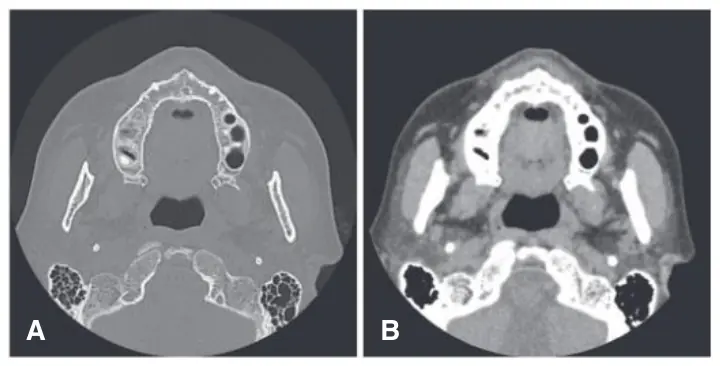
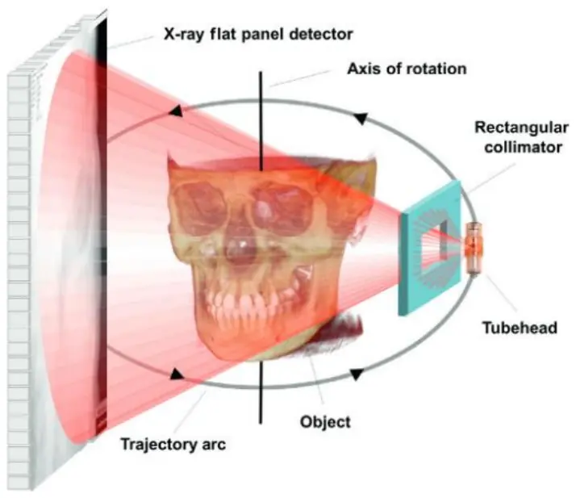

نسخه استخراجشده؛ ترجمه یا تأیید علمی انجام نشده است. وضعیت: captured
در ۱۹۷۲، گادفری هانسفیلد — یک مهندس، نه پزشک — اختراع دستگاهی انقلابی را اعلام کرد که «تصاویر مقطعی باریک و متوالی از سر» تولید میکرد. تصاویر عمود بر محور کرانیوکائودال سر ساخته میشدند، و به همین دلیل اصطلاح توموگرافی محوری رایانهای یا «CAT scan» پذیرفته شد.

و معنای واژه: «توموگرافی» از دو واژهی یونانی میآید — «tomos» به معنای برش و «graphe» به معنای ترسیم. این «نخستین کاربرد عملی الکترونیکی اصول توموگرافی در پزشکی» بود.
و نوبل ۱۹۷۹ را دو نفر با هم گرفتند: هانسفیلد جایزهی نوبل فیزیولوژی یا پزشکی را با آلن کورمک شریک شد، «که کارش بر ریاضیات بازسازی تصویر دو دهه پیشتر، پایهی توموگرافی رایانهای را گذاشته بود». پس ریاضیات پیش از دستگاه آمد.
و CT دو مشکل بنیادی رادیوگرافی تخت را حل کرد: «تصاویر با کنتراست بالا، که سوپرایمپوزیشن ساختارهای آناتومیک مجاور — ذاتی رادیوگرافی پروجکشن معمول — و محوشدگی توموگرافی فیلمی را از میان میبرد».
و CBCT کجای این داستان است؟ «یک شاخهی تکاملی جداگانه از CT برای تولید الکترونیکی تصاویر مقطعی.» شباهتها هست، ولی «تفاوت در شکل پرتو اکتساب تصویر، و نیز در ژنراتور و سامانهی آشکارساز، CBCT را بهعنوان رویکردی ساده و ارزان به تصویربرداری مقطعی الکترونیکی — با تمرکز عمدتاً بر ناحیهی ماگزیلوفاسیال — مستقل نگه میدارد».
MDCT و CBCT در اکتساب داده اشتراکهای زیادی دارند — این شش گام در هر دو یکساناند:

و تفاوت وکسل با پیکسل — که بهآسانی در هم میآمیزند: «وقتی مجموعهدادهی حجمی روی مانیتور نمایش داده میشود، تصویر از یک ماتریکس مربعی از پیکسلها (عناصر تصویر) ساخته میشود. هر پیکسل نمایانگر موقعیت وکسل است و درجهی تضعیف در آن ناحیهی مکعبی بهصورت شدت تصویر در مقیاس خاکستری نمایش مییابد.»
پس سه واژه، سه چیز: دکسل در آشکارساز، وکسل در حجم بیمار، پیکسل روی صفحهی نمایش.
و تفاوتهای مهم MDCT و CBCT در چه چیزهاییاند؟ «پیکربندی دستگاه، منبع پرتو، نوع و ویژگیهای آشکارساز، پارامترهای اکتساب مانند میدان دید (FOV) و تنظیمات اکسپوز، الگوریتمهای بازسازی، و استفاده از مواد حاجب.» و همهی اینها «بر ویژگیهای تصاویر تولیدشده و دوز بیمار پیامد دارند».